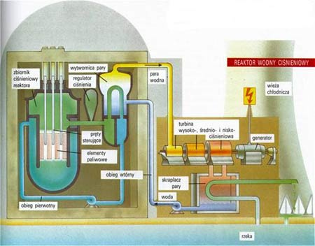

Energia jądrowa to jedno z najbardziej fascynujących i skutecznych źródeł energii dostępnych dla ludzkości. Ale czym dokładnie jest energia jądrowa? W skrócie, energia jądrowa jest generowana poprzez proces zwanym rozszczepieniem jąder atomowych.
Proces ten zachodzi w specjalnych urządzeniach zwanych reaktorami jądrowymi. Podczas rozszczepienia jądra atomowego, jądro atomu ulega podziałowi na dwa lub więcej mniejsze jądra, emitując przy tym ogromne ilości energii w postaci ciepła i promieniowania. Ten wydzielony ciepło jest następnie wykorzystywane do ogrzewania wody, która wytwarza parę, napędzając turbinę, która z kolei generuje energię elektryczną.
Najczęściej wykorzystywanym paliwem w reaktorach jądrowych jest uran-235 lub pluton-239. Te materiały, choć radioaktywne, są niezwykle skuteczne w generowaniu energii. Co więcej, w przeciwieństwie do tradycyjnych źródeł energii, takich jak węgiel czy gaz ziemny, energia jądrowa nie emituje dwutlenku węgla ani innych gazów cieplarnianych, co przyczynia się do zmniejszenia negatywnego wpływu na środowisko.

Jednak energia jądrowa nie jest pozbawiona kontrowersji. Istnieją obawy dotyczące bezpieczeństwa, zarządzania odpadami radioaktywnymi i potencjalnych awarii nuklearnych. Niemniej jednak, dzięki postępowi technologicznemu i restrykcyjnym standardom bezpieczeństwa, energia jądrowa nadal pozostaje jednym z najbardziej obiecujących i efektywnych źródeł energii dla ludzkości.
Poprzez zrozumienie procesu generowania energii jądrowej, możemy docenić jej potencjał jako czystego i niezawodnego źródła energii, które może odegrać kluczową rolę w przyszłości naszego globalnego systemu energetycznego.